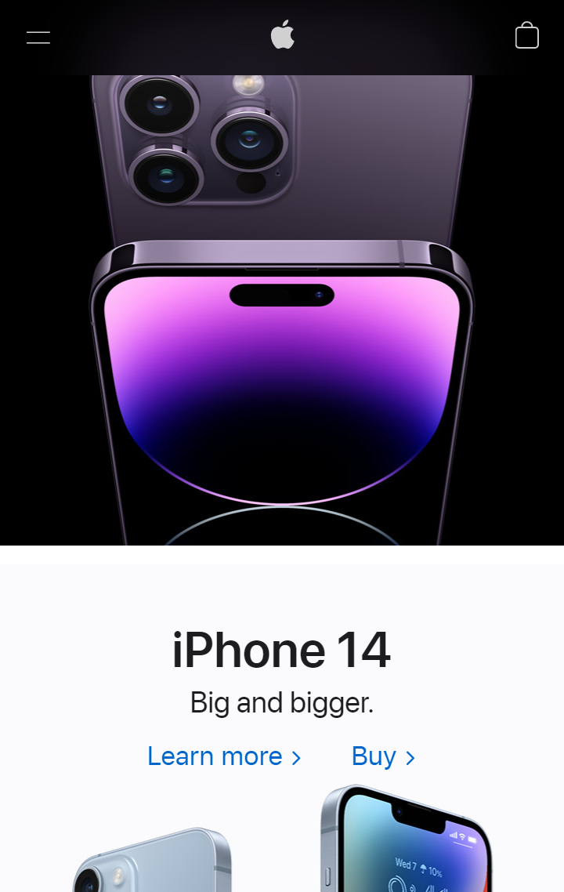
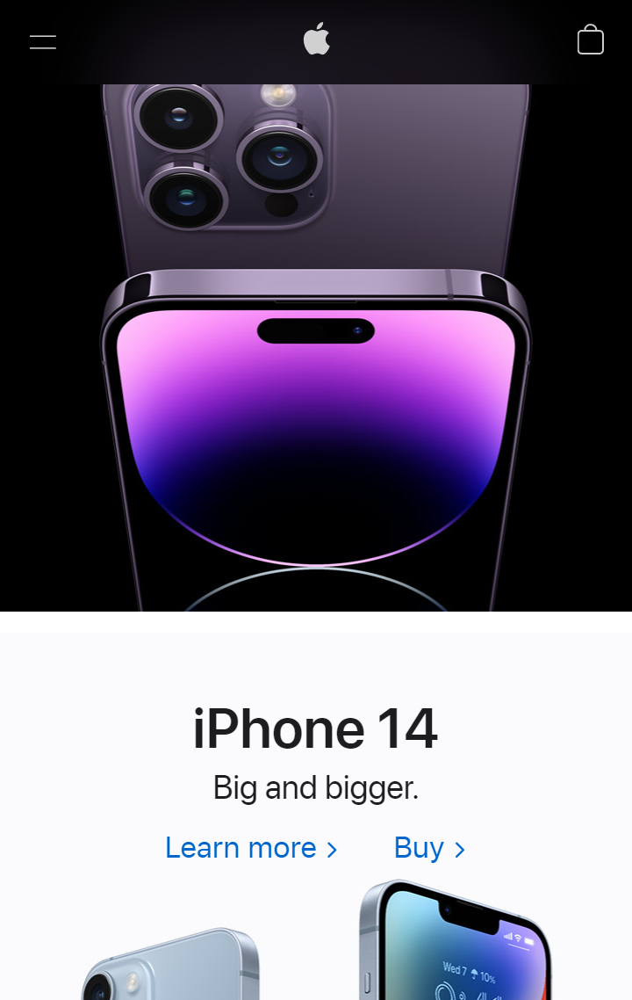
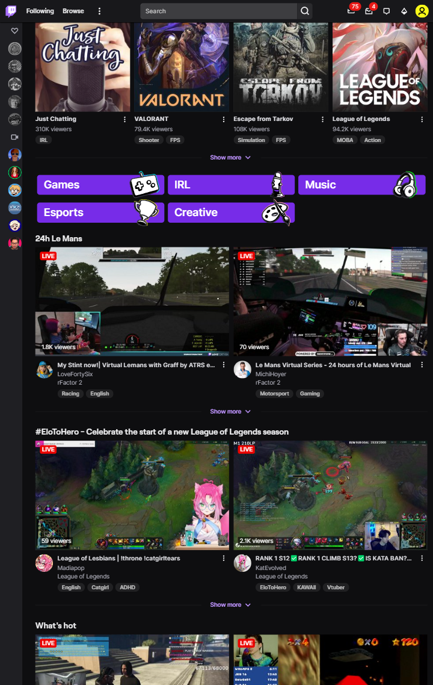
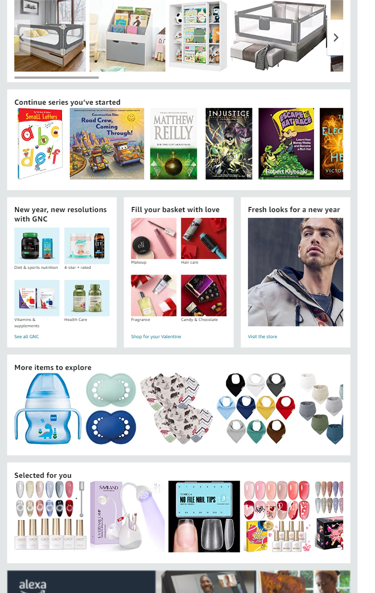

Apple
apple.com Apple shows great contrast on their website by changing the background color between black and white every screen viewport increment. This helps the user know when a new product or new information is being presented
Apple
apple.com Apple shows great contrast on their website by changing the background color between black and white every screen viewport increment. This helps the user know when a new product or new information is being presented
Twitch
twitch.tv Twitch exemplifies alignment due to the fact that each streamer is lined up in rows and columns and games are also aligned. Visually this makes it easy to see where new streamers or games begin and end.
Amazon
amazon.com Amazon is a great example of proximity. There are many different types and styles of products, yet similar or like products are all grouped together either in columns or boxes to more easily know where to click next.